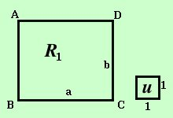
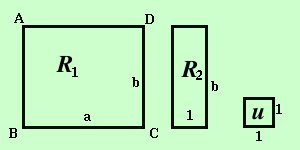

|
 Determiniamo quanto vale l'area del rettangolo R1 di vertici ABCD sappiamo che BC__= a e CD__= b Misureremo l'area rispetto all'unita' di misura u fornita dal rettangolo (quadrato) di lati 1  Per poter misurare l'area abbiamo bisogno di un rettangolo intermedio R2 di lati b ed 1 Ora la misura di R1 rispetto ad R2 sara' a
R1 = a · R2 ora misuro R2 rispetto ad u
R2 = b · u ora posso sostituire R1 = a · R2 = a · b · u = a b cioe'
 Se invece di un rettangolo abbiamo un quadrato di lato a la formula diventa
Se invece di un rettangolo abbiamo un quadrato di lato a la formula diventaAs = a2 Cioe' La misura dell'area del quadrato si ottiene elevando a quadrato la misura di un lato Per memorizzarlo: lato al quadrato |

|

|

|

|